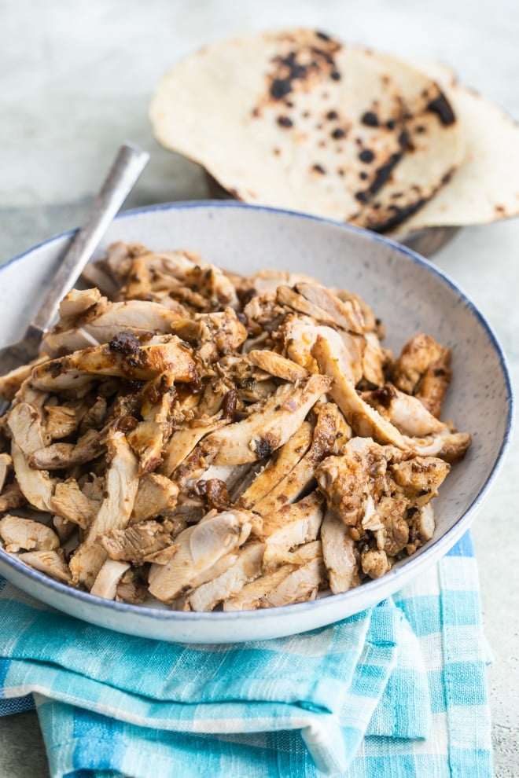

Chipotle Chicken

Description
Chipotle Chicken is tender and juicy, packed with flavor, and perfect on everything. And whether you want to grill it, sauté it, or bake it in the oven, I’ve got all your options covered!
Ingredients
- 1/2 medium red onion coarsely chopped
- 3 cloves garlic
- 2 tablespoons adobo sauce
- 2 tablespoons ancho chile powder or 1 ounce dried ancho chiles, soaked
- 2 tablespoons olive oil or rice bran oil, plus more for the cooking surface
- 2 teaspoons ground cumin
- 2 teaspoons dried oregano
- Salt and freshly ground black pepper
- 4 pounds boneless, skinless chicken
Recipe
- To the bowl of a food processor or blender, add red onion, garlic, adobo sauce, ancho chile powder, olive oil, cumin, dried oregano, 1 teaspoon salt, and ½ teaspoon pepper. Blend until smooth. Pour into a measuring cup and add water to reach 1 cup.
- Place the chicken in a large freezer-safe plastic bag. Pour in marinade, close the bag, and mash until chicken is evenly coated. Place the plastic bag in a dish and refrigerate at least 30 minutes or overnight.
- Heat 2 tablespoons oil in a large skillet until shimmering. Add chicken to the pan and cook, turning occasionally, until the temperature reaches 165 degrees on an internal thermometer. Depending on the size of your skillet, you can cook the chicken in batches.
- Remove to a cutting board and tent with foil for 10 minutes. Chop into small pieces. Season to taste with salt. Serve on tortillas or in bowls with additional toppings as desired.